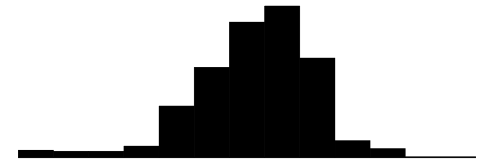
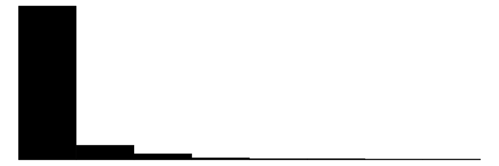
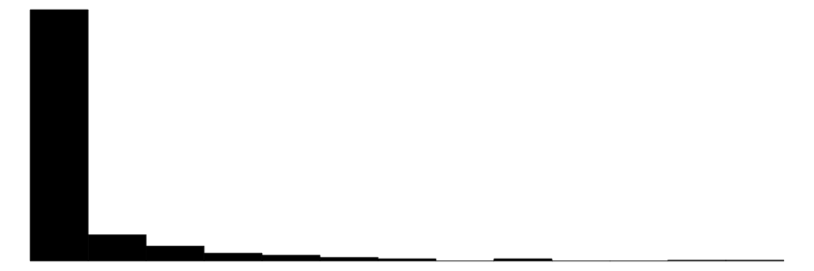
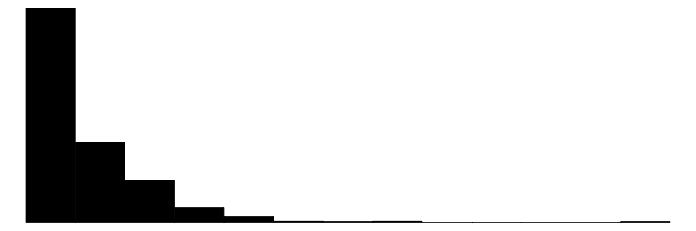

library(modelsummary)datasummary_skim(experimental, type ="numeric")
Unique
Missing Pct.
Mean
SD
Min
Median
Max
Histogram
age
34
0
25.4
7.1
17.0
24.0
55.0
education
14
0
10.2
1.8
3.0
10.0
16.0

earnings74
115
0
2102.3
5363.6
0.0
0.0
39570.7

earnings75
155
0
1377.1
3151.0
0.0
0.0
25142.2

earnings78
308
0
5300.8
6631.5
0.0
3701.8
60307.9

datasummary_skim(experimental, type ="categorical")
N
%
treat
non_treated
260
58.4
treated
185
41.6
race
black
371
83.4
hispanic
39
8.8
white
35
7.9
degree
high_school
97
21.8
no_high_school
348
78.2
marriage
married
75
16.9
unmarried
370
83.1
employment74
employed
119
26.7
unemployed
326
73.3
employement75
employed
156
35.1
unemployed
289
64.9
b.
The two groups are similar in terms of their average age, education and earnings in 1974. The average earnings for the treated group are slightly higher in 1975 and much higher in 1978 than the untreated group. The race composition in treated and untreated groups are similar while there is a slightly higher proportion of hispanic people and a lower proportion of white people in the non-treated group. A higher proportion of people in the treated group have high school degreee compared with the non-treated group. The two groups also have similar marriage patterns and employment status in 1974. In 1975, a higher proportion of people from the treated group are employed. There seems to be no obvious selection bias based on observable characteristics.
datasummary_balance(experimental~ treat, data = experimental)
Warning: Please install the `estimatr` package or set `dinm=FALSE` to suppress
this warning.
non_treated (N=260)
treated (N=185)
Mean
Std. Dev.
Mean
Std. Dev.
age
25.1
7.1
25.8
7.2
education
10.1
1.6
10.3
2.0
earnings74
2107.0
5687.9
2095.6
4886.6
earnings75
1266.9
3103.0
1532.1
3219.3
earnings78
4554.8
5483.8
6349.1
7867.4
N
Pct.
N
Pct.
race
black
215
82.7
156
84.3
hispanic
28
10.8
11
5.9
white
17
6.5
18
9.7
degree
high_school
43
16.5
54
29.2
no_high_school
217
83.5
131
70.8
marriage
married
40
15.4
35
18.9
unmarried
220
84.6
150
81.1
employment74
employed
65
25.0
54
29.2
unemployed
195
75.0
131
70.8
employement75
employed
82
31.5
74
40.0
unemployed
178
68.5
111
60.0
c.
The entire 95% confidence interval lies above 0. This indicates the NSW program significantly increased participants’ earnings.
# calculate the group means for the treated and non-treated groupgroup_means <- experimental |>group_by(treat) |>summarize(mean_earnings78 =mean(earnings78),se =sd(earnings78)/sqrt(n()),n =n() )# Compute ATEate <- group_means$mean_earnings78[2] - group_means$mean_earnings78[1]# Pooled standard errorse_ate <-sqrt(sum(group_means$se^2))# Construct confidence intervalci_lower <- ate -1.96* se_ateci_higher <- ate -1.96* se_ateci <-c(ci_lower = ci_lower, ci_higher = ci_higher)ci
balance_table <-datasummary_balance(~ treat, # Compare groupsdata = composite,title ="Balance Table: NSW-treated vs CPS-controls",dinm =FALSE)# Print the tablebalance_table
non_treated (N=15992)
treated (N=185)
Balance Table: NSW-treated vs CPS-controls
Mean
Std. Dev.
Mean
Std. Dev.
age
33.2
11.0
25.8
7.2
education
12.0
2.9
10.3
2.0
earnings74
14016.8
9569.8
2095.6
4886.6
earnings75
13650.8
9270.4
1532.1
3219.3
earnings78
14846.7
9647.4
6349.1
7867.4
N
Pct.
N
Pct.
race
black
1176
7.4
156
84.3
hispanic
1152
7.2
11
5.9
white
13664
85.4
18
9.7
degree
high_school
11261
70.4
54
29.2
no_high_school
4731
29.6
131
70.8
marriage
married
11382
71.2
35
18.9
unmarried
4610
28.8
150
81.1
employment74
employed
14079
88.0
54
29.2
unemployed
1913
12.0
131
70.8
employement75
employed
14244
89.1
74
40.0
unemployed
1748
10.9
111
60.0
e.
The CPS controls appear to be very different from the treated group for all the observable characteristics listed above. The raw differences in earnings78 can not be interpreted as the average treatment effect as there is likely to be a selection bias and other characteristics such as race and education are likely to confound the treatment effect estimate.
Exercise 4
a.
The estimated treatment effect is $1066 when regressing earnings on treatment status and covariates in the composite dataset with a p-value of 0.054. This suggest weak evidence of a positive effect. However, the average treatment effect obtained from the randomised experiment is larger ($1794) and statistically significant at 5% significant level as shown in 2.c.
The assumption of conditional independence is needed. After controlling for observable covariates, treatment assignment must be independent of potential outcomes. This requires that all confounders are observed and included in the model.
c.
The ATE conditional on covariates is expressed as:
\[
\text{ATE} = \mathbb{E}[Y \mid D = 1, X] - \mathbb{E}[Y \mid D = 0, X]
\]
Under unconfoundedness, the assignment of the treatment can be seen as random. Hence, D is mean independent of \((Y_0, Y_1)\), we can write ATE over the full populatioon as:
\[
\mathbb{E}[Y \mid D, X] = \alpha_0 + X' \beta_0 + D \cdot \left[(\alpha_1 - \alpha_0) + X'(\beta_1 - \beta_0)\right]
\] Therefore, we should run a regression to estimate ATE as follows:
\[
Y = \alpha + \tau D + X' \gamma + \varepsilon
\] Additional assumptions:
(1) It is a linear model.
(2) Unconfoundedness: \((Y_0, Y_1) \perp\!\!\!\perp D \mid X\)
Exercise 5
a.
In the propensity score model, we should exclude earnings78 from the list of covariates because it is a post-treatment outcome variable. Including it would introduce post-treatment bias, violating the assumption that the propensity score is based solely on pre-treatment characteristics. Only covariates determined before treatment assignment should be included when estimating the propensity score.
logit_data <- composite |>mutate(treat =ifelse(treat =="treated", 1, 0),# Convert categorical vars to factor firstrace =as.factor(race),degree =as.factor(degree),marriage =as.factor(marriage),employment74 =as.factor(employment74),employement75 =as.factor(employement75) ) reg2 <-glm(treat~.-1- earnings78, data = logit_data, family =binomial(link ="logit"))summary(reg2)
Call:
glm(formula = treat ~ . - 1 - earnings78, family = binomial(link = "logit"),
data = logit_data)
Coefficients:
Estimate Std. Error z value Pr(>|z|)
age -1.790e-02 1.064e-02 -1.683 0.092421 .
education 1.949e-02 4.859e-02 0.401 0.688381
earnings74 6.253e-05 2.845e-05 2.197 0.027990 *
earnings75 -1.773e-04 3.600e-05 -4.923 8.51e-07 ***
raceblack -3.049e+00 8.383e-01 -3.637 0.000275 ***
racehispanic -5.500e+00 8.721e-01 -6.306 2.86e-10 ***
racewhite -7.335e+00 8.716e-01 -8.416 < 2e-16 ***
degreeno_high_school 9.028e-01 2.751e-01 3.282 0.001031 **
marriageunmarried 9.943e-01 2.413e-01 4.120 3.79e-05 ***
employment74unemployed 1.572e+00 2.639e-01 5.956 2.58e-09 ***
employement75unemployed 2.347e-01 2.386e-01 0.984 0.325164
---
Signif. codes: 0 '***' 0.001 '**' 0.01 '*' 0.05 '.' 0.1 ' ' 1
(Dispersion parameter for binomial family taken to be 1)
Null deviance: 22426.08 on 16177 degrees of freedom
Residual deviance: 950.45 on 16166 degrees of freedom
AIC: 972.45
Number of Fisher Scoring iterations: 10
The result highlights the substantial difference in the distribution of propensity scores for the control and treated group. The histogram of the control group’s propensity scores shows an extreme concentration near 0, while the treated group’s scores are widely distributed between 0 and 0.65. This means people in the treated group are more likely to receive treatment than the control group, which suggests substantial differences in observed covariates between groups.
The difference between parts (c) and (d) arises from the presence of extreme propensity scores in the untrimmed sample. In part (c), these lead to very large inverse weights, especially among control units with scores near 0. This results in a highly volatile and unreliable ATE estimate. In contrast, part (d) trims these problematic observations and ensures that only observations with sufficient overlap are used for causal inference, where treated and control units are more comparable. This produces a much more stable and credible estimate of the treatment effect.